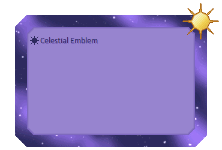

The balloon Celestial Emblem is now available! It's a simple balloon with celestial theming, with 3 different options for the symbol, and 4 different sizes.

I really like how this came out! I managed to make a space-y balloon that doesn't sacrifice readability at all, for once. There's some subtle layering stuff here that I think is fun, as well.
Also, for some reason my brain tells me that the text area is very gummy and soft. So, um, enjoy that thought! (Why do I always want to eat my balloons...? Unsure.)
This balloon was made for Etc. Jam 2026, and that event is still ongoing, so I'll leave this here and get back to work!